Merhaba, Ben Umut Uzundal
Marmara Üniversitesi BÖTE son sınıf öğrencisi, Ağ ve Sistem Yönetimi tutkunu.
Teknolojiye olan merakım, beni çocukluğumdaki farklı hayallerden alıp bilişim dünyasının derinliklerine taşıdı. Üniversite eğitimim boyunca bir "İsviçre çakısı" gibi çok yönlü donanımlar edinirken, asıl tutkumun karmaşık ağ mimarileri ve sistem altyapıları olduğunu keşfettim. "Ne kadar çok şey öğrenirsem, o kadar derinleşmem gerekir" felsefesiyle hareket ediyor; şu anda Python, Windows Server ortamları ve Cisco CCNA sertifikasyon süreçleri üzerine yoğunlaşıyorum. Sürekli öğrenmeye ve gelişmeye aç bir teknoloji profesyoneli adayıyım.
Yetenekler & Teknolojiler
1. Yönlendirme (Routing) Protokolleri
Dinamik Yönlendirme (OSPF & EIGRP):
Inter-VLAN Routing (Router on a Stick)
2. Anahtarlama (Switching) ve Yedeklilik
Spanning Tree Protocol (STP)
Link Aggregation (EtherChannel):
İlk Atlama Yedekliliği (HSRP)
3. Ağ Güvenliği ve Servisleri
Erişim Kontrol Listeleri (ACL): (Ağ trafiğini filtreleme ve güvenlik politikaları oluşturma)
Kablosuz Ağ Güvenliği
Ağ Servisleri Yönetimi (DHCP, NAT)
5. Temel Yetkinlikler
Cisco IOS CLI Yönetimi
Python ve Ağ Otomasyonu
Windows Server Yönetimi
6. Ekstra Yetkinlikler
PHP
JavaScript
C
Python
Algoritma Tasarımı
HTML
CSS
Microsoft Office
SQL
Dart
Projeler & Topolojiler
(indirmek için tıklayınız)
Temel router konfigürasyonu
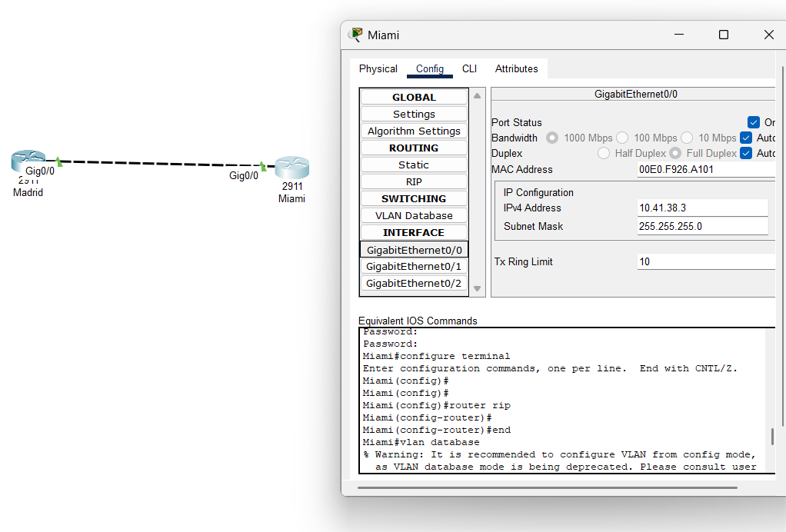 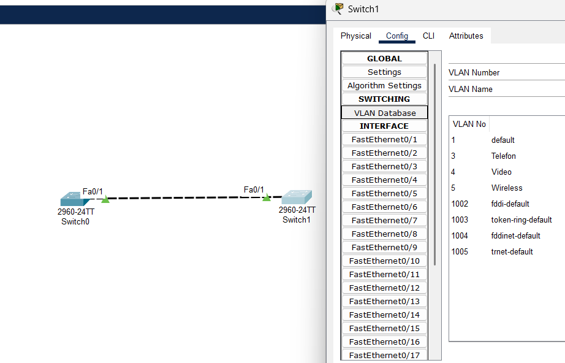 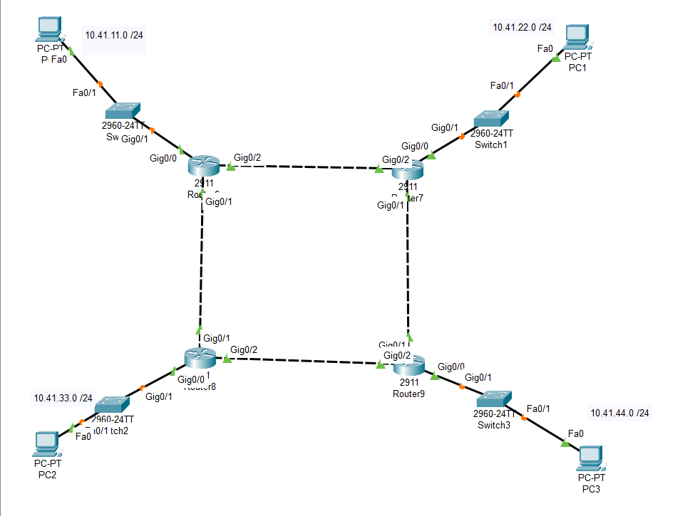 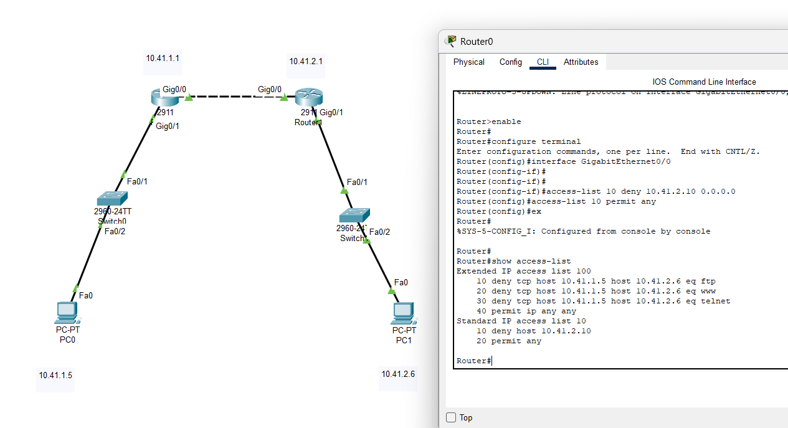 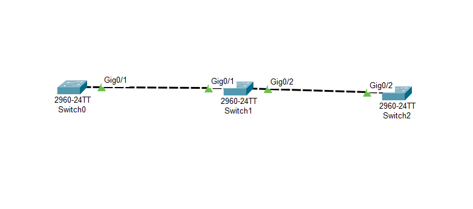 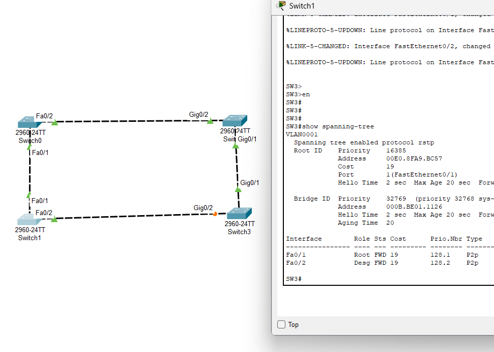 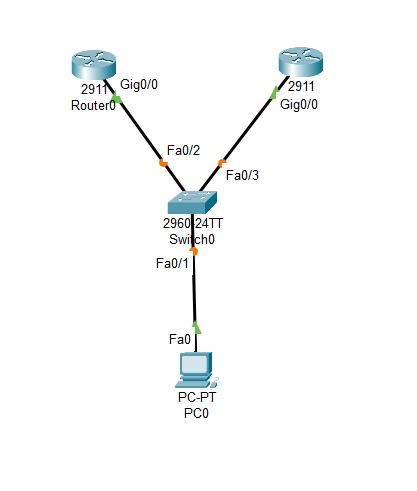 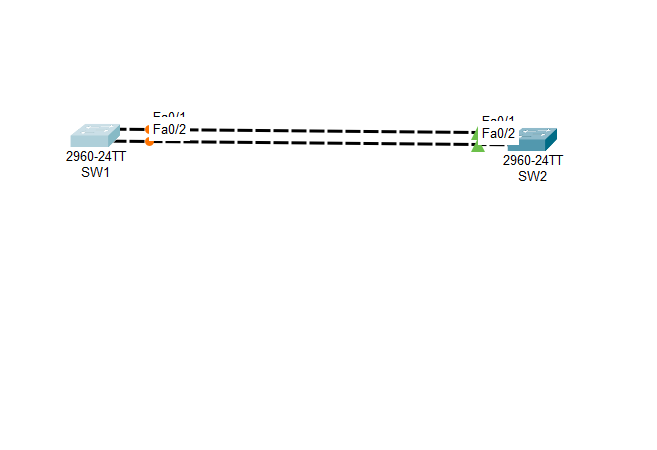 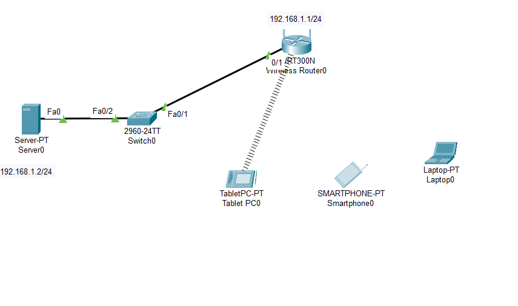 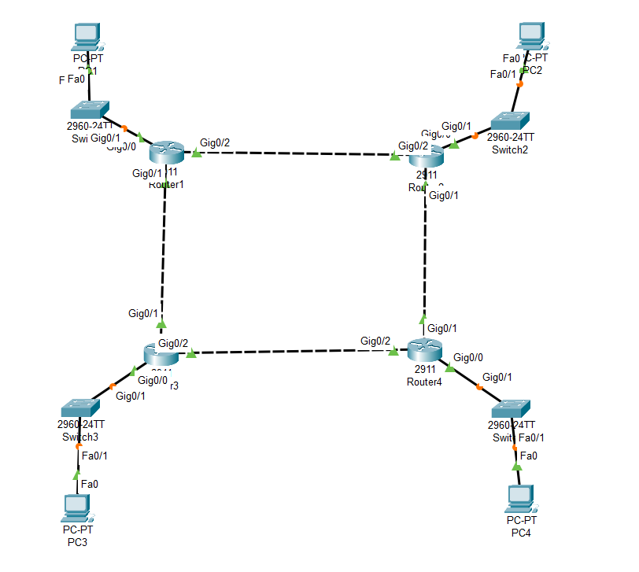 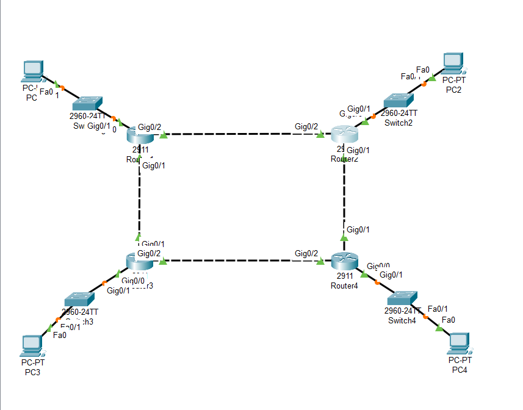 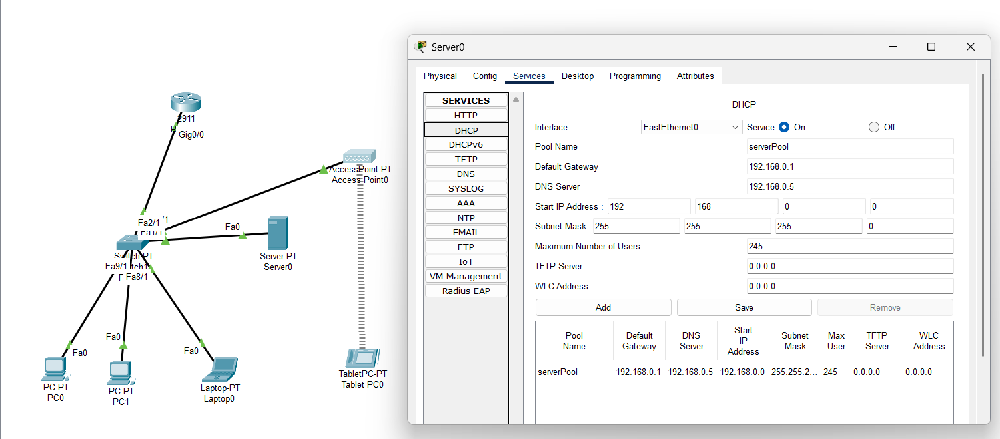 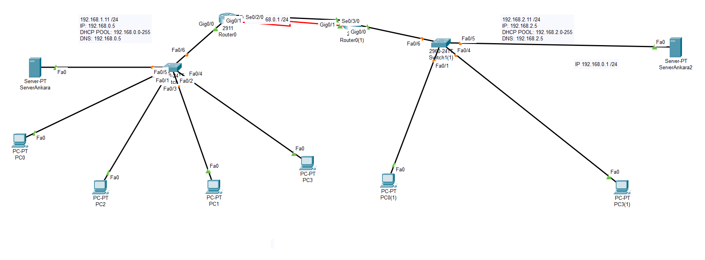 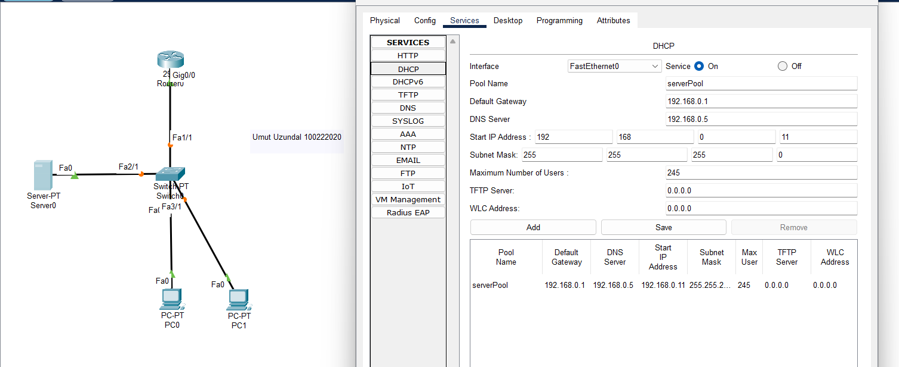 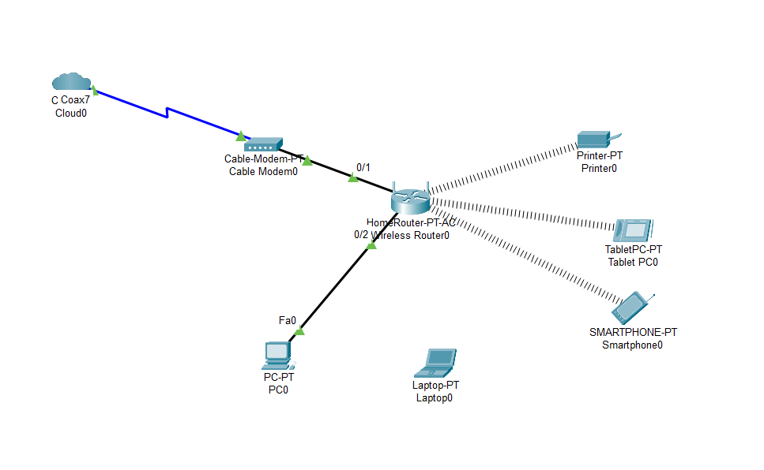 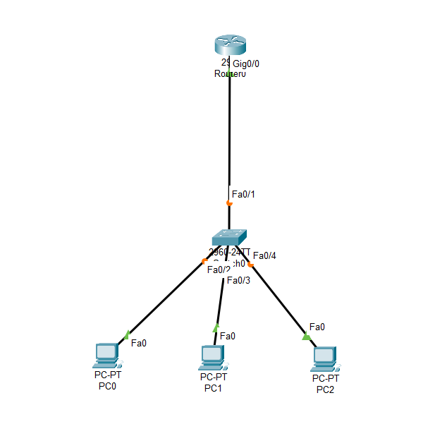 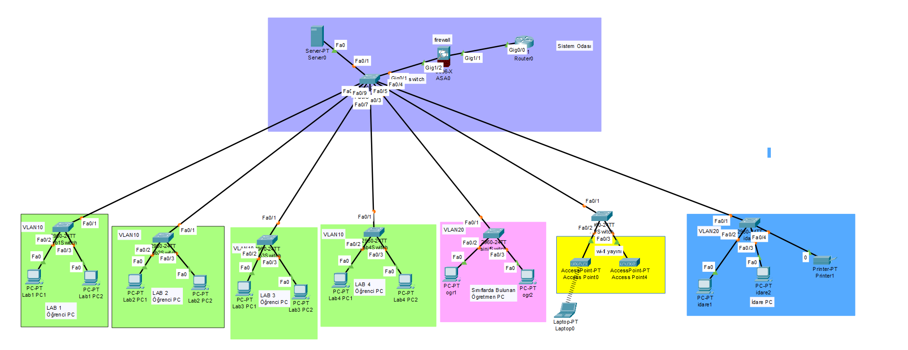 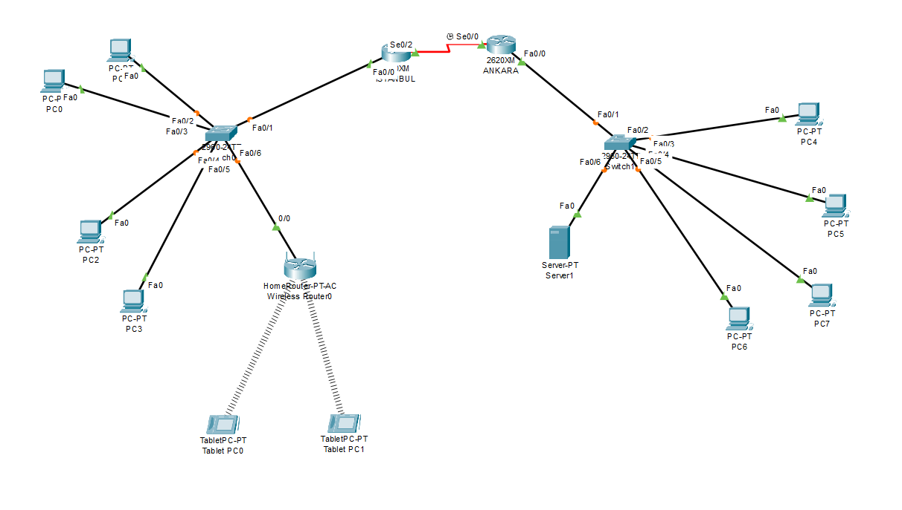
Temel Switch konfigürasyonu

Switchport konfigürasyonu
Statik Routing Konfigürasyonu
Vlanlar arası Routing Konfigürasyonu

ACL Konfigürasyonu
VTP Konfigürasyonu
Spanning Tree Konfigürasyonu
HSRP Konfigürasyonu
Etherchannel Konfigürasyonu
Cisco Kablosuz Mimari ve Controller Konfigürasyonu
Single Area OSPF Konfigürasyonu
OSPFv3 Konfigürasyonu

EIGRP Konfigürasyonu
DHCP Konfigürasyonu
DHCP Konfigürasyonu (2)
DHCP Konfigürasyonu (3)
Homerouter Konfigürasyonu
Router On A Stick Konfigürasyonu
WPA2 Konfigürasyonu
Okul Network Mimari Projesi
Örnek Topoloji
Hepsini yüklemek için tıklayınız.
Eğitim & Deneyim
İstanbul Maltepe Kadir Has Anadolu Lisesi - 2018 - 2022
Marmara Üniversitesi - Bilgisayar ve Öğretim Teknolojileri Eğitimi Bölümü - 2022 - 2026
Trendyol Express, İstanbul - Kargo Sortaj - 2022 Ekim - 2023 Kasım
TNC Group Bilgi Teknolojileri Stajı - 2025 Haziran - Ağustos
MEB Erenköy Fehmi Ekşioğlu Ortaokulu Stajyer Bilişim Teknolojileri ve Yazılım Öğretmeni 2025 Ekim - 2026 Haziran